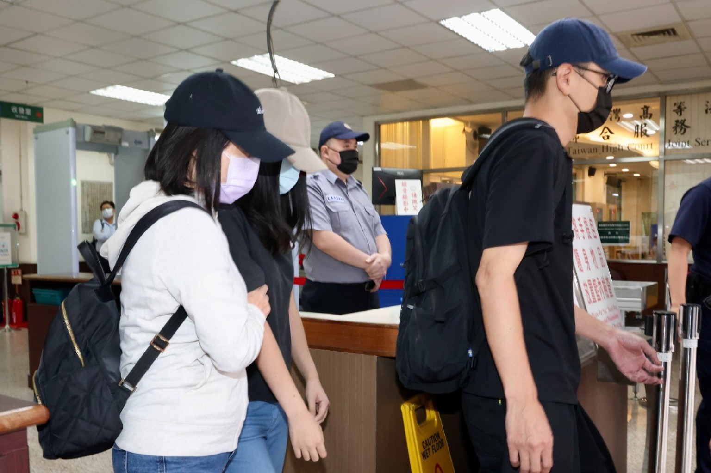
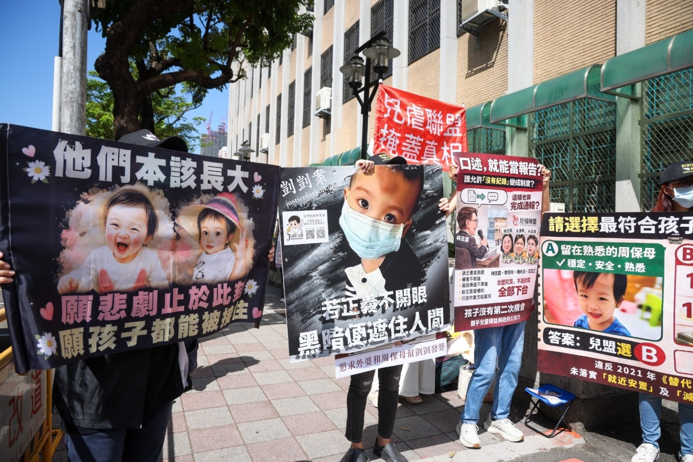
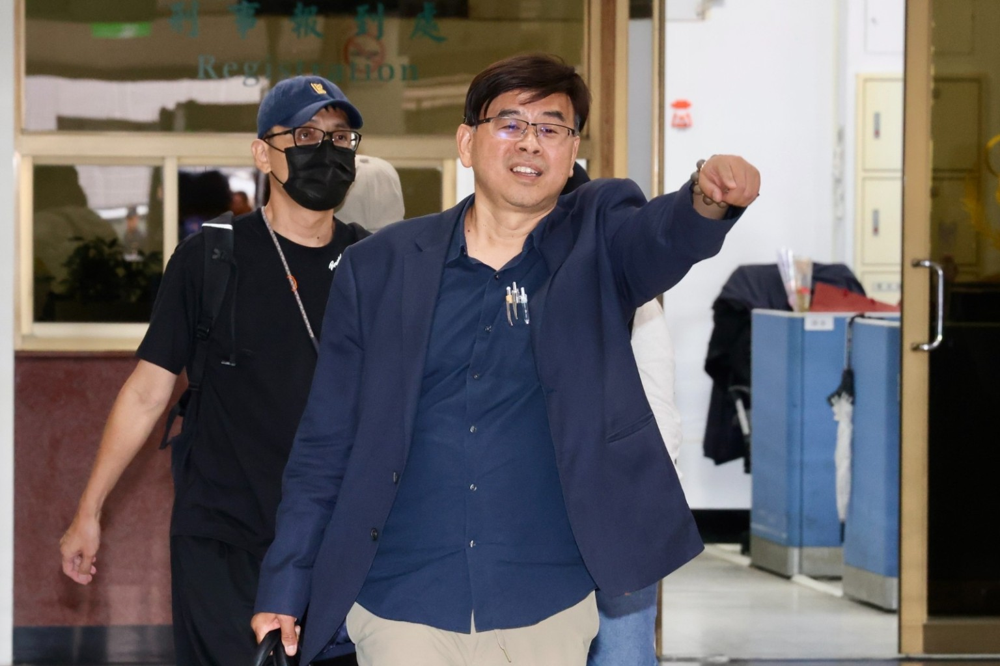
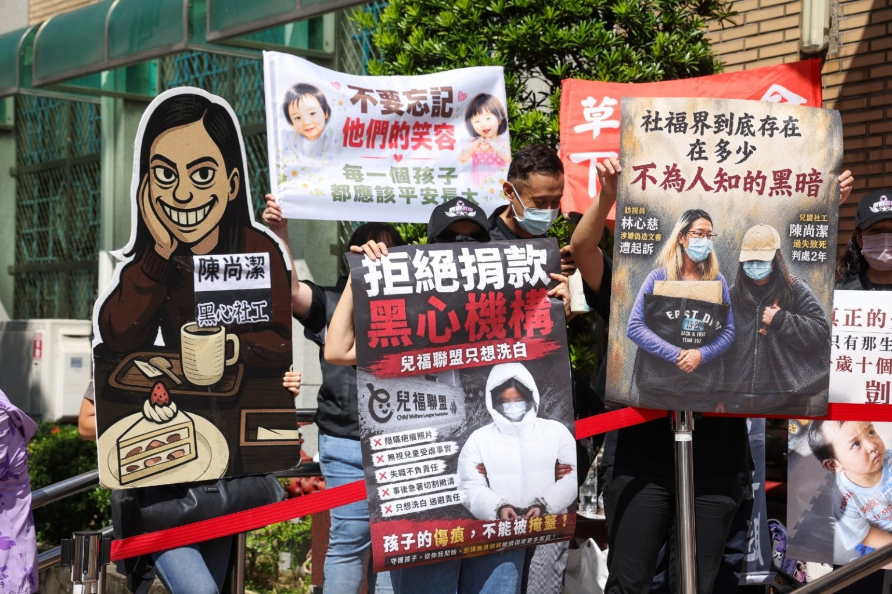
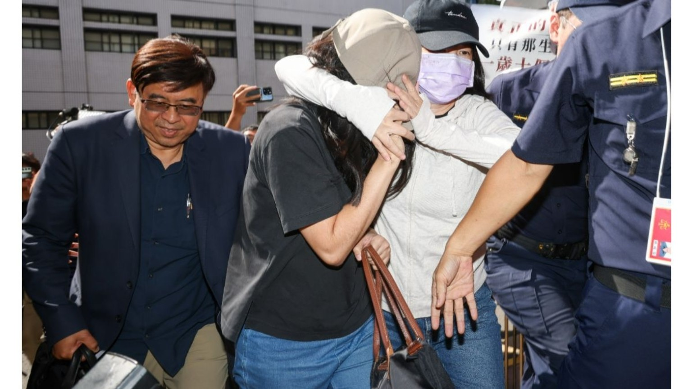

量刑
检方认为原审量刑过轻，与被告应负的行为责任及案件情节不相当，请求撤销原判决并为较重的量刑判断。
依 9 月 16 日庭讯纪录、法庭纪录与重点整理完整汇整。此庭为准备程序：法院先整理后续审理的事实、证据与争点。
以下照片由使用者提供，呈现 9 月 16 日高院准备程序庭当天的到庭与法院外倡议现场。图片来源：使用者提供；原始摄影者／媒体出处待补。未取得原始授权或图说前，本站不将其标示为中央社或其他媒体作品。





以下依庭讯笔记、公开行政调查与既有公开程序资料整理；涉及法院认定之内容，均限于一审判决阶段。
| 日期 | 事件 | 说明 |
|---|---|---|
| 2022.01.06／01.28 | 第一次出养程序启动 | 母亲表示无力扶养、希望出养；树莺社福中心以脆弱家庭服务开案。 |
| 2022.03.17 | 第一次转介儿福联盟 | 树莺转介合法媒合服务者；儿盟承接并指派社工。 |
| 2022.05.04—06.29 | 萧钦香保母的第一段全日照顾 | 母亲签出养服务契约，并与儿盟、儿盟合作保母萧钦香签家庭托育契约。 |
| 2022.06.29 | 第一次程序暂停、儿盟结案 | 因母亲仍为监护人且联系未果，程序暂停；外婆接回孩子。 |
| 2022.06.30—2023.08.30／31 | 周月保母的稳定照顾 | 外婆另觅周月保母照顾；公开纪录对终止日记载为 8 月 30 日或 31 日，保留一日差异。 |
| 2023.05.08—07.18 | 第二次出养程序重启 | 外婆改定监护；6 月 21 日再次转介儿盟，7 月 18 日签署出养媒合服务契约。 |
| 2023.09.01 | 转入刘彩萱全日托育 | 外婆、儿盟合作保母刘彩萱与儿盟签家庭托育契约。 |
| 2023.09.25／10.23／11.20 | 三次访视 | 一审判决记载额头瘀青、消瘦及精神状态改变、掉牙与伤势等异常。 |
| 2023.12.24 | 剀剀死亡 | 剀剀失去意识后送医，最终死亡。 |
| 2024.08.27—2026.11.06 | 侦查、审判与二审准备程序 | 北检起诉；2026 年 4 月一审宣判、5 月检方上诉；9 月 16 日二审第一次准备程序，10 月 15 日书状期限、11 月 6 日续行。 |
检方认为原审量刑过轻，与被告应负的行为责任及案件情节不相当，请求撤销原判决并为较重的量刑判断。
检方就工作访视纪录不实及伪造文书、业务登载不实部分提起上诉，主张被告有故意为不实登载，原审就此部分的认定有误。
辩方指出被告任职儿福联盟，工作为收出养安置社工；原审不当扩张社工的职务义务及保证人地位。辩方主张被告已依月访与纪录要求执行工作。
辩方主张保母刘彩萱刻意隐匿虐待情形，被告对该结果欠缺可预见性，也不应被认定有过失。
辩方对原审认定有罪部分全部提起上诉，并非针对原审无罪部分。
辩方表示刑事犯罪事实必须严格依证据认定；对部分警询、侦讯笔录的任意性与合法性提出疑义，并主张存在不正讯问问题。
庭上宣读原审认定的基本事实：被告是从事家庭联系工作的社工；新北市社会局于 112、113 年间委托媒合保母照顾剀剀，其后涉及被告的访视与纪录。就如何比对起诉书与原审判决、列示争执与不争执事项，辩方表示将于庭后书状提出。
关于证据能力，检方表示起诉书引用的供述与物证均有证据能力，并将以书状回应辩方对任意性、合法性及不正讯问的质疑；庭上亦确认辩方指涉上诉书第 175 页第 4 项等具体位置。个别笔录是否可采，仍待法院依程序审查。
| 项目 | 检方主张 | 辩方主张 |
|---|---|---|
| 量刑 | 原审量刑过轻，应撤销并加重。 | 对原审有罪部分提起上诉。 |
| 社工责任／过失 | 就原判决犯罪事实与责任提出上诉。 | 原审扩张职务义务与保证人地位；已遵循月访与纪录，欠缺预见可能性与过失。 |
| 纪录与文书 | 访视纪录有故意不实登载，涉伪造文书与业务登载不实。 | 就原审有罪认定提出争执。 |
| 证据能力 | 所列供述、物证均有证据能力，将具体答复。 | 部分警询、侦讯笔录任意性、合法性有疑义，主张不正讯问。 |
| 争点整理 | 由后续书状及证据调查处理。 | 刑事事实应严格证明，争执／不争执将庭后提出。 |
校正汇整对话纪录：以下按庭上发言顺序整理，已校正可辨识的语者、程序用语与明显辨识错字；无法确认的破碎语句不列入。
法官：宣告开庭，说明程序与被告权利。
检方：原审就过失致死部分量刑偏低，与被告应负的行为责任不相当，请求撤销并改判较重刑；另就工作访视纪录不实部分，主张涉犯伪造文书及业务登载不实，请求撤销原审无罪判断。
辩方：被告为收出养社工，不是安置社工或儿少社工；原审不当扩张义务与保证人地位。被告依规定进行每月家访与纪录；保母刻意隐匿情况，被告无从察觉，难认有过失。辩方确认对原审有罪部分上诉，无罪部分未上诉。
法官：因庭期有限，先就原审认定有罪的过失致死事实进行准备与答辩。
辩方：起诉书与原审判决的事实记载有待比对；建议庭后以书状逐项列出争执与不争执事项，以利后续程序。
辩方：刑事事实都应有证据支持，不能因列为不争执就免除证明。
法官：整理争点不是限缩事实认定，而是为建立后续调查证据的顺序与范围。
法官：确认辩方已提出准备程序书状，对多项证据能力表示异议。
辩方：质疑部分警询、侦讯笔录的任意性、合法性及不正讯问。
检方：请辩方具体指出争议资料；检方认为所列证据具证据能力，将以书状补充意见。
法官：后续依序处理过失致死事实、文书相关事实、证据能力、争点与调查证据声请。告诉代理人到庭，告诉人本人未到庭；双方于10 月 15 日前提出书状，并于11 月 6 日下午 2 时续行准备程序。
法官于下午 2:08 开庭、说明程序及法律规定；检方提出量刑过轻，以及工作访视纪录不实、伪造文书／业务登载不实的上诉理由。
辩方说明被告为收出养安置社工，认为原审扩张义务与保证人地位；被告按月访与纪录，保母隐匿虐待，难认有预见性或过失；上诉针对原审有罪部分。
法官宣读被告从事家庭联系工作、新北市社会局于 112、113 年间委托媒合保母照顾剀剀，以及其后访视与纪录等原审事实脉络。
辩方表示将在庭后比较起诉书与原审判决、提出争执与不争执事项；庭上讨论两者之差异及后续整理方式。
辩方强调刑事事实须依证据认定，不宜仅列示不争执事项；法院说明准备程序的组织目的，是安排后续证据调查。
辩方否认部分证据能力，质疑警询、侦讯的任意性及不正讯问；检方表示所引证据均具能力，将以书状回应。
法院确认辩方所指的具体页码与项目，并说明后续准备程序要依犯罪事实、证据能力、争点及声请调查证据的次序推进。
法院确认告诉代理人出庭、告诉人未到庭；检辩于 10/15 前提出书状，并订 11/6 续行准备程序。
以下依可辨识的庭上发言，按程序顺序整合为阅读版笔记；重复发言合并，口语赘词省略，并保留各方原意。
检方表示，原审对过失致死部分所处刑度在法定刑范围的中度偏低，与被告应负的行为责任不相当，违反罪刑相当原则，请求撤销原判决、改判较重刑。另就原审判无罪的伪造文书部分，检方主张工作访视纪录有不实记载，被告具有伪造文书故意，涉犯伪造文书及业务登载不实，请求撤销改判。
辩方表示，被告是收出养社工，并非安置社工或儿少社工；原审扩张其义务与保证人地位。辩方主张被告已履行收出养社工职务，包括每月家访与纪录；保母刘彩萱刻意隐匿相关情况，被告无从察觉，并无「应注意、能注意而不注意」的过失。辩方确认：对原审有罪部分上诉，无罪部分未上诉。
法院表示本庭时间有限，先就第一审判决认定有罪的犯罪事实，特别是过失致死部分，进行被告答辩与准备。辩方则表示，起诉书与原审判决的事实记载可能有差异，如逐段于庭上比对将耗费时间，建议庭后先与被告整理，再以书状分别提出争执与不争执事项。
辩方指出，刑事事实仍须有证据支持，不因当事人列为不争执就不需要证据。法院回应，整理争点不是限缩法院可认定的事实，而是让检方、辩方与法院消化彼此意见后，建立后续调查证据的顺序与范围。
法院确认辩方已于 9 月 16 日提出准备程序书状，对起诉书证据清单中多项证据能力提出异议。辩方指涉警询、侦讯笔录的任意性、合法性及不正讯问；检方请辩方具体指出争议资料的位置，并表示检方认为所列资料均有证据能力，后续将以书状或下次庭期提出具体意见。
法院安排后续依序处理：过失致死事实答辩、文书相关事实答辩、证据能力整理、本案争点整理，以及双方声请调查证据范围。告诉代理人到庭、告诉人本人未到庭；经协调后，定于 11 月 6 日下午 2 时 续行准备程序，并请双方于 10 月 15 日前 提出整理书状。
以下将文件中的庭上发言依「发言内容」与「程序语意」并列。这是阅读与追踪用的整理，不替代法院对证据或法律效果的最终判断。
| 发言主体 | 法庭发言内容与语意对照 |
|---|---|
| 法官／检察官 | 法官宣告开庭时间为 2 点 08 分，确认刑事诉讼法第 26 条、第 276 条第 4 项等规定。检察官陈述上诉理由：原审量刑与被告责任不相当，违反罪刑相当原则，请求撤销改判较重之刑；另就业务登载不实与伪造文书部分，主张工作纪录不实记载及伪造文书故意，请求撤销改判。 |
| 辩护人／法官 | 辩护人说明：被告为儿盟收出养社工，原判决扩大其义务与保证人地位；被告每月访视均依规定，系保母刘彩轩刻意隐蔽虐童事实，被告无过失。上诉范围为有罪部分全部上诉、无罪部分未上诉。法官指示因时间有限，优先针对第一审认定有罪的犯罪事实进行审理与准备。 |
| 法官／辩护人 | 法官宣读第一审认定事实：被告陈尚洁为儿盟社工，从事弱势家庭联系业务，受新北市社会局委托媒合保母。辩护人与法官讨论事实整理方式，建议就检方起诉书与原审判决的事实进行界定。 |
| 辩护人／法官 | 律师补充建议：因庭讯时间有限，容许辩护人庭后将起诉书事实与原判决事实比对整理，列出争执与不争执事项后以书状提出，以节省法庭时间。法官与律师讨论起诉事实与判决事实的差异。 |
| 辩护人／法官 | 辩护人说明刑事事实均需证据支持，不宜迳列不争执；且辩护人当日已提出准备书状与争点。法官回应：法院需消化辩护人争点，列争点目的在于确立后续如何调查证据。 |
| 法官／检察官／辩护人 | 辩护人于 9/16 书状中对起诉书证据清单的部分证据能力提出否认，包括警询任意性与不正讯问争议。法官询问检察官意见，检方表示认为均有证据能力，后续将以书状或于下次开庭具体答辩。 |
| 法官／检察官 | 法官厘清辩护人书状所主张不正讯问与无证据能力的具体笔录页数，例如上诉理由状第 175 页第 4 项等。法官整理后续准备程序：过失致死事实答辩、伪造文书事实答辩、证据能力整理、调查证据申请。 |
| 法官／双方律师／检察官 | 法官确认告诉代理人到庭状况，进行下次庭期协调后，决定于 11 月 6 日 进行下次准备程序庭，并定于 10 月 15 日前 由双方提出相关准备书状。 |
五个步骤是法院安排二审审理的工作顺序；它们不是五项法院既定结论。每一步仍以双方书状、证据调查与法院后续裁定／判决为准。
本章依庭讯脉络重新编排；以下依程序推进，完整呈现各方主张、争点与后续安排。
案件为「陈尚洁过失致死及业务伪造文书案（准备程序）」。出席者包括承审法官、检察官、被告陈尚洁、辩护人蔡律师、朱律师、陈律师及告诉代理人。法官于下午 2 时 08 分宣告开庭，告知并确认刑事诉讼法第 26 条、第 276 条第 4 项等程序规定与诉讼权利。
量刑过轻与刑罚相当原则：检方主张原审就被告量刑所认定的刑度，与被告应负担的行为责任不相当，明显违反罪刑相当原则，请求撤销原判决并改判较重刑度。
业务登载不实与伪造文书：检方主张被告就业务执掌的工作处访视纪录有不实记载；主观上具有伪造文书故意，客观上构成伪造文书罪及业务登载不实罪，原审此部分认定有误，请求撤销改判；其余理由依上诉书所载。
职务义务与保证人地位：辩方表示被告为儿福联盟收出养安置社工，原审不当扩大注意义务与保证人地位；被告依社工职务规定，每月一次执行访视与纪录，并无懈怠。
预见可能性与过失：辩方主张保母刘彩轩刻意隐瞒、隐蔽虐待幼童事实，被告客观上并无「应注意、能注意而不注意」的过失情事。
上诉范围：被告对原审认定有罪部分全部提起上诉，原审无罪部分未提起上诉。
原审认定被告为财团法人中华民国儿童福利联盟文教基金会社工，从事弱势家庭联系及访视业务；于民国 112 年至 113 年间接受新北市政府社会局委托，协助媒合保母照顾幼童剀剀，后续执行定期访视与纪录工作。
辩护人表示，若在庭上逐段比对起诉书与原审判决的事实差异，将耗费大量时间，建议庭后比对、分项列出「争执」与「不争执」事项并以书状提出。辩方强调刑事犯罪事实必须有严格证据支持，不能因列为不争执即免除举证责任。法院澄清，整理争点并非限制事实认定范围，而是为建立后续调查证据的顺序与范围。
辩护人于 9 月 16 日提出准备程序书状，对起诉书证据清单中相当部分的证据能力提出否定抗辩；并于上诉理由状第 175 页第 4 项等及准备程序状，质疑被告警询、侦讯笔录的任意性与合法性，主张有不正讯问等无证据能力情形，请求具体厘清。检察官表示起诉书引用的供述及物证均具证据能力，将于庭后提出具体意见陈述回应。
告诉代理人已到庭，告诉人本人未到庭。庭上曾讨论 10 月 14 日、10 月 28 日／11 月 5 日、10 月 30 日等可能期日，最终定于 2026 年 11 月 6 日 续行准备程序；检察官与辩护人须于 10 月 15 日前 提出相关准备整理书状。
本页依提供的〈台湾高等法院刑事准备程序庭开庭完整庭讯笔记与纪录〉与〈陈尚洁二审第一次准备庭重点整理〉汇整。文件标题虽称庭讯笔记，但可供刊载的实质内容为庭讯纪录、重点摘要及八段庭讯笔记对照；本页未臆补未提供的逐字对话。后续将依公开庭讯与可查证资料更新。